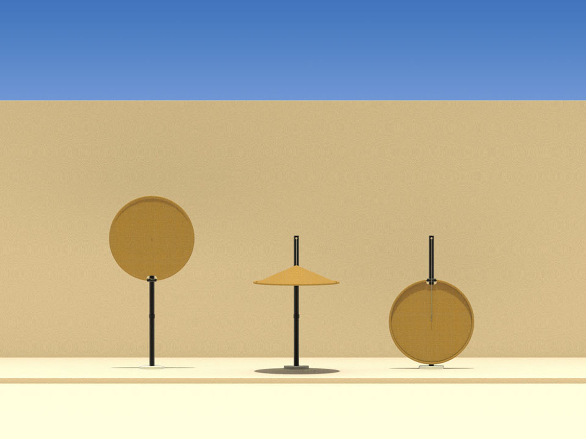
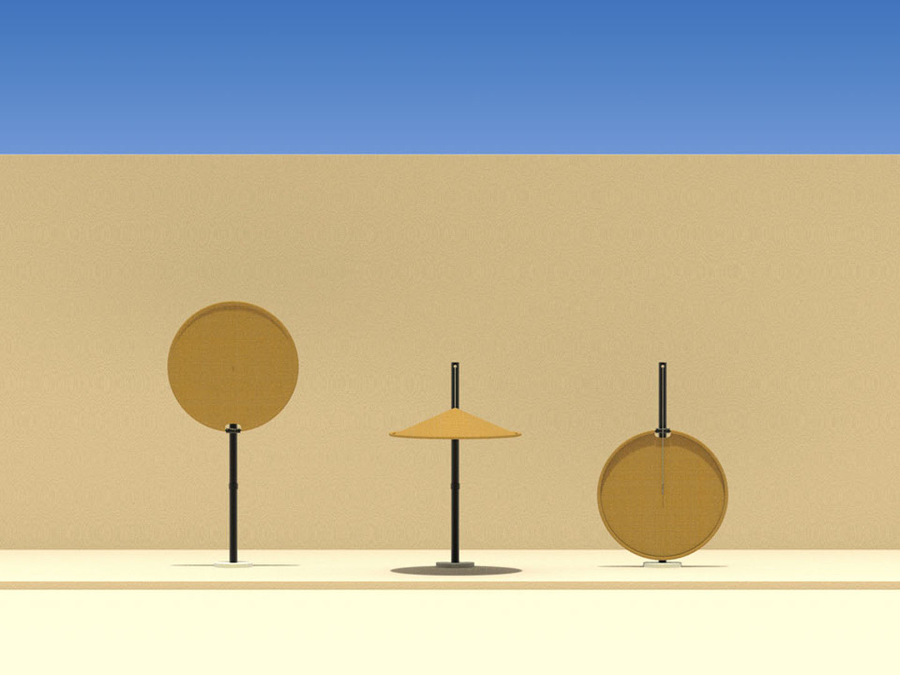

Éclipse
2020
Projet étudiant de design produit
Projet encadré par Julie Meunier
Travail formel sur la tension textile en amont du projet. Choix d’un même système pour toutes les expérimentations. Chacune est composée d’un cylindre en carton recouvert d’un tissu (ici du jersey polyester). Le tissu est ensuite tiré vers le bas pour créer un creux.
A partir des précédentes recherches et sur la thématique du refuge, j’ai choisi de concevoir un objet permettant de se protéger du solei. Pour cela j’ai inversé le sens de mes expérimentations, le tissu est dorénavant tiré vers le haut pour concevoir un parasol. Ainsi, la forme typique des parasols est créée par la tension textile. Cela permet aussi d’épurer la forme en évitant l’utilisation de nombreux bras articulés en métal.
 

Site conçu par Amaury Hardré, 2024


à propos